Last updated: 2021-02-08
Checks: 7 0
Knit directory: hesc-epigenomics/
This reproducible R Markdown analysis was created with workflowr (version 1.6.2). The Checks tab describes the reproducibility checks that were applied when the results were created. The Past versions tab lists the development history.
Great! Since the R Markdown file has been committed to the Git repository, you know the exact version of the code that produced these results.
Great job! The global environment was empty. Objects defined in the global environment can affect the analysis in your R Markdown file in unknown ways. For reproduciblity it’s best to always run the code in an empty environment.
The command set.seed(20210202) was run prior to running the code in the R Markdown file. Setting a seed ensures that any results that rely on randomness, e.g. subsampling or permutations, are reproducible.
Great job! Recording the operating system, R version, and package versions is critical for reproducibility.
Nice! There were no cached chunks for this analysis, so you can be confident that you successfully produced the results during this run.
Great job! Using relative paths to the files within your workflowr project makes it easier to run your code on other machines.
Great! You are using Git for version control. Tracking code development and connecting the code version to the results is critical for reproducibility.
The results in this page were generated with repository version eb48856. See the Past versions tab to see a history of the changes made to the R Markdown and HTML files.
Note that you need to be careful to ensure that all relevant files for the analysis have been committed to Git prior to generating the results (you can use wflow_publish or wflow_git_commit). workflowr only checks the R Markdown file, but you know if there are other scripts or data files that it depends on. Below is the status of the Git repository when the results were generated:
Ignored files:
Ignored: .Rhistory
Ignored: .Rproj.user/
Ignored: data/bed/
Ignored: data/bw
Ignored: data/meta/
Ignored: data/peaks
Ignored: data/rnaseq/
Unstaged changes:
Modified: code/embed_functions.R
Modified: code/globals.R
Note that any generated files, e.g. HTML, png, CSS, etc., are not included in this status report because it is ok for generated content to have uncommitted changes.
These are the previous versions of the repository in which changes were made to the R Markdown (analysis/x_chromosome.Rmd) and HTML (docs/x_chromosome.html) files. If you’ve configured a remote Git repository (see ?wflow_git_remote), click on the hyperlinks in the table below to view the files as they were in that past version.
| File | Version | Author | Date | Message |
|---|---|---|---|---|
| Rmd | eb48856 | cnluzon | 2021-02-08 | wflow_publish(“analysis/”) |
Here we look to scaled global levels of coverage per chromosome.
Extra functions used to cleanup the relevant code. Click code to see the source.
#' Summarize stats per chromosome on a scaled bigWig file
#'
#' @param bwfile BigWig file to summarize
#' @param chromosomes Array of chromosome names to include.
#'
#' @return A data frame with stats per chromosome: mean, chr size, #reads
#' (estimated as (score * chr size) / fraglen), %reads.
scaled_reads_per_chromosome <- function(bwfile, chromosomes, fraglen = 150) {
granges <- unlist(summary(BigWigFile(bwfile)))
df <- data.frame(granges[seqnames(granges) %in% chromosomes, ])
rownames(df) <- df$seqnames
# Calculate scaled number of reads as mean x chromosome length / read length
df$nreads <- (df$score * df$width) / fraglen
# Perc of total
df$perc <- (df$nreads / sum(df$nreads)) * 100
# Perc size
df$size <- df$width / sum(df$width)
df$group <- basename(bwfile)
df[chromosomes, ]
}
chromosomes <- paste0("chr", c(1:22, "X", "Y"))
# Fix some parameters on treemap function to remove some clutter from nb.
chr_treeplot <- partial(
treemap,
index = "seqnames",
vSize = "nreads",
vColor = "score",
type = "value",
mapping = c(0, 3),
range = c(0, 3),
fontsize.labels = 16,
fontsize.legend = 16,
fontsize.title = 20
)H3K27me3 is highly abundant on X chromosome on naïve cells.
If we take a look at coverage per chromosome for both Naïve and Primed cells:
bw <- file.path(params$bwdir, "H3K27m3_H9_Ni_pooled.hg38.scaled.bw")
values <- scaled_reads_per_chromosome(bw, chromosomes = chromosomes)
chr_treeplot(
values,
palette = c("#ffffff", gl_condition_colors[["Naive_Untreated"]]),
fontcolor.labels = "#555555",
border.col = c("white"),
title = "H3K27m3 - Naïve"
)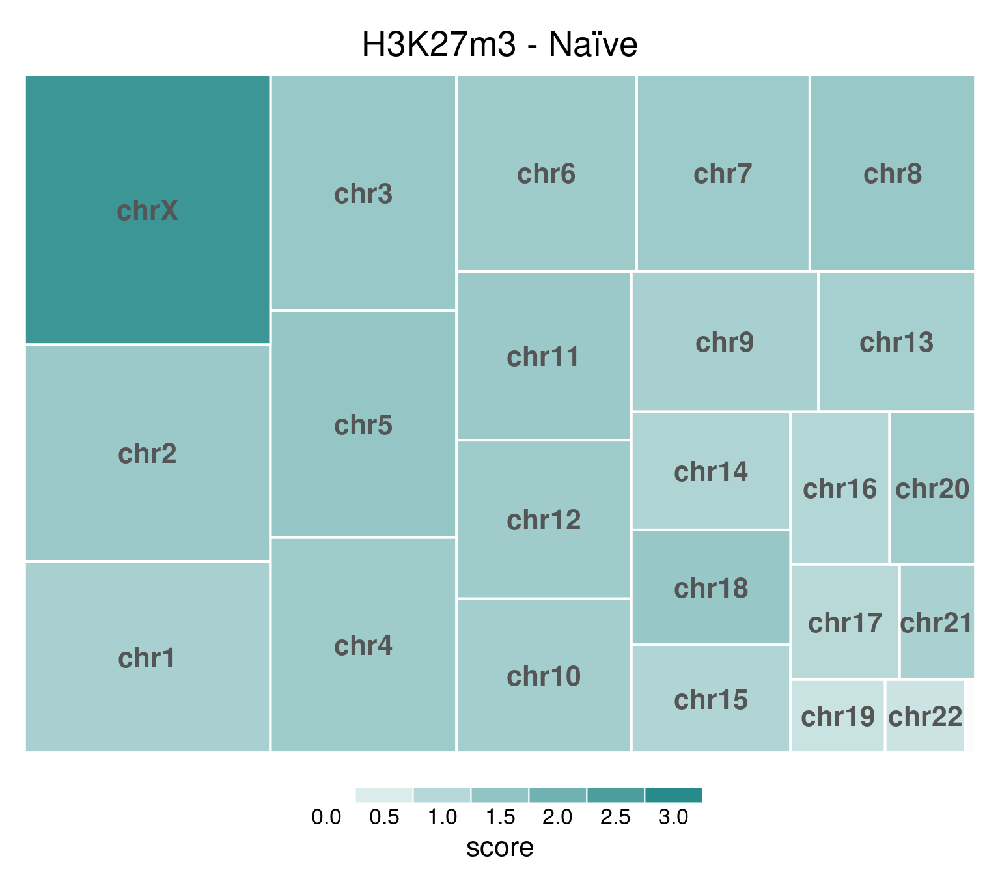
Underlying values can be downloaded here: download plot data.
In this and subsequent plots, each rectangle’s size is proportional to the number of read mapped to its corresponding chromosome. Color intensity represents mean coverage per chromosome, and rectangles are ordered according to size. Top-left is the highest value.
As opposed to primed, where values are very even:
bw <- file.path(params$bwdir, "H3K27m3_H9_Pr_pooled.hg38.scaled.bw")
values <- scaled_reads_per_chromosome(bw, chromosomes = chromosomes)
chr_treeplot(
values,
palette = c("#ffffff", gl_condition_colors[["Primed_Untreated"]]),
fontcolor.labels = "#555555",
border.col = c("white"),
title = "H3K27m3 - Primed"
)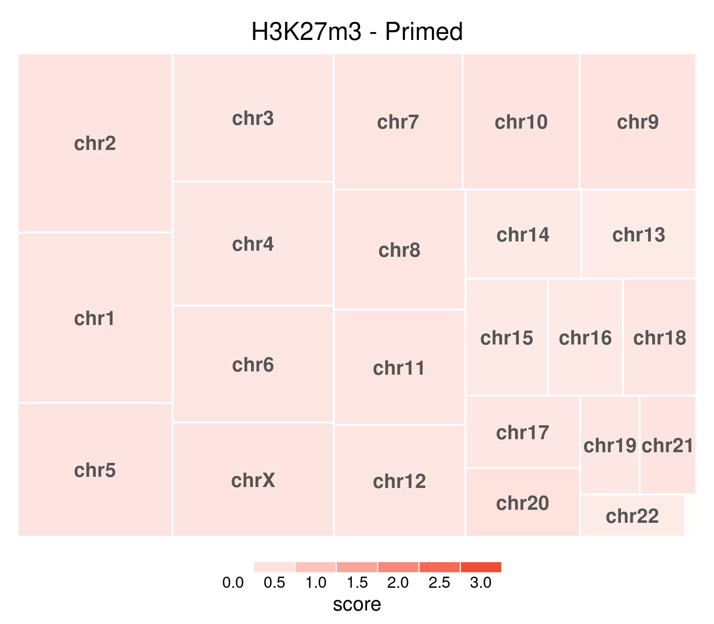
Underlying values can be downloaded here: download plot data.
EZH2i-treated cells, in comparison, have H3K27m3 globally removed:
bw <- file.path(params$bwdir, "H3K27m3_H9_Ni-EZH2i_pooled.hg38.scaled.bw")
values <- scaled_reads_per_chromosome(bw, chromosomes = chromosomes)
chr_treeplot(
values,
palette = c("#ffffff", gl_condition_colors[["Naive_Untreated"]]),
fontcolor.labels = "#555555",
border.col = "#999999",
title = "H3K27m3 - Naïve-EZH2i"
)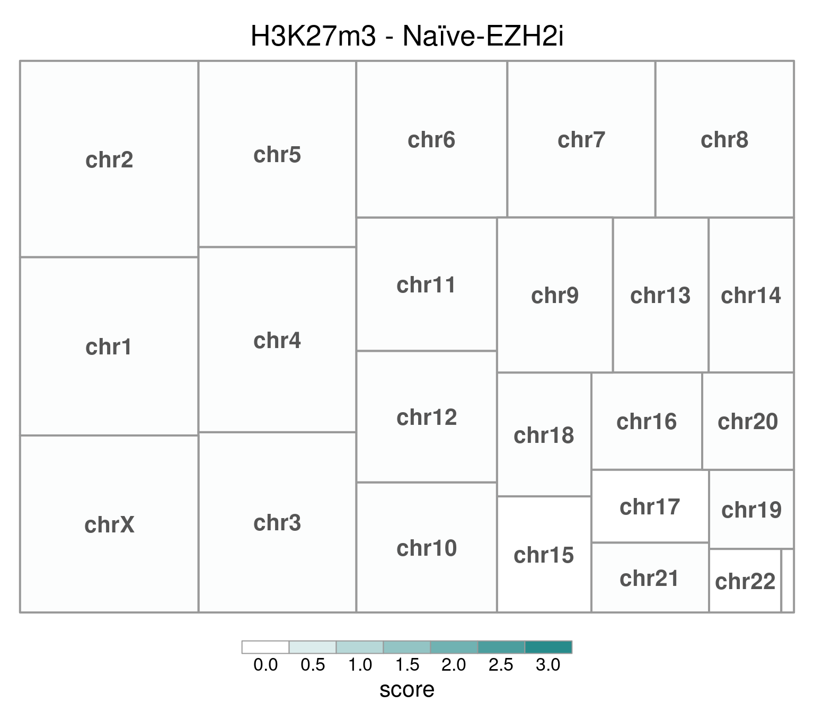
Underlying values can be downloaded here: download plot data.
bw <- file.path(params$bwdir, "H3K27m3_H9_Pr-EZH2i_pooled.hg38.scaled.bw")
values <- scaled_reads_per_chromosome(bw, chromosomes = chromosomes)
chr_treeplot(
values,
palette = c("#ffffff", gl_condition_colors[["Primed_Untreated"]]),
fontcolor.labels = "#555555",
border.col = "#999999",
title = "H3K27m3 - Primed-EZH2i"
)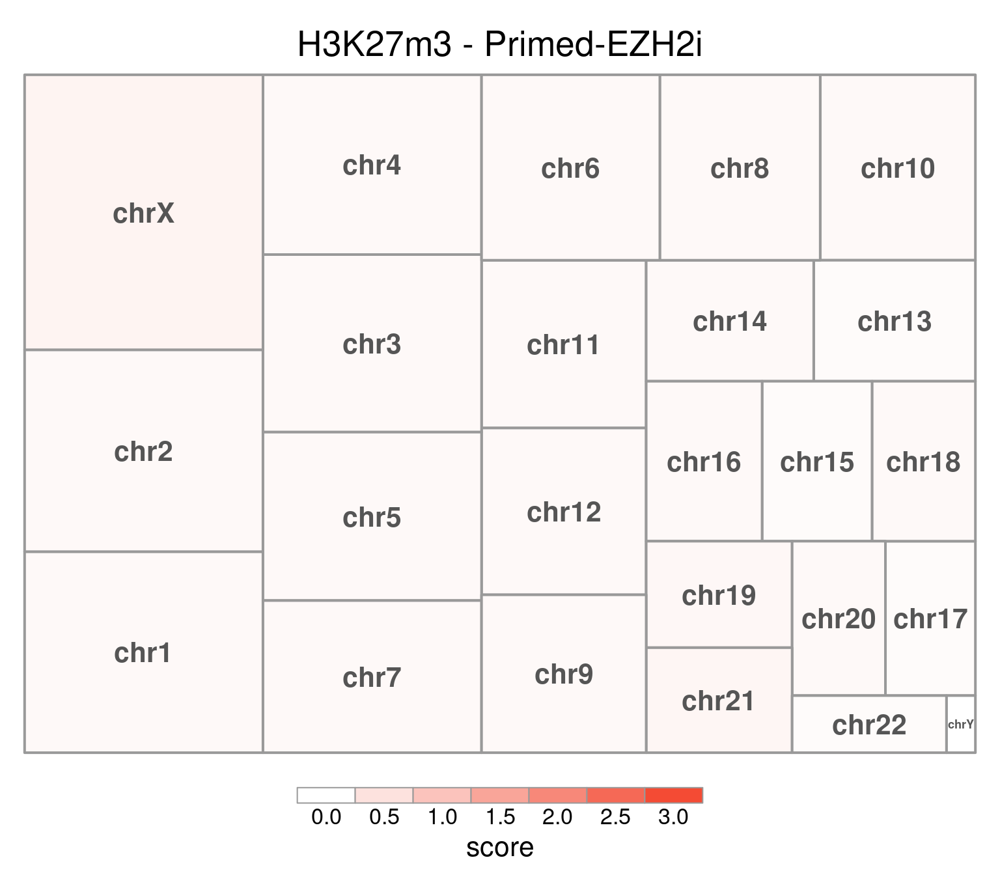
Underlying values can be downloaded here: download plot data.
If we look at the rest of the histone marks:
H3K4me3 does not show this X-chromosome specificity.
bw <- file.path(params$bwdir, "H3K4m3_H9_Ni_pooled.hg38.scaled.bw")
values <- scaled_reads_per_chromosome(bw, chromosomes = chromosomes)
chr_treeplot(
values,
palette = c("#ffffff", gl_condition_colors[["Naive_Untreated"]]),
fontcolor.labels = "#555555",
border.col = c("white"),
title = "H3K4m3 - Naïve"
)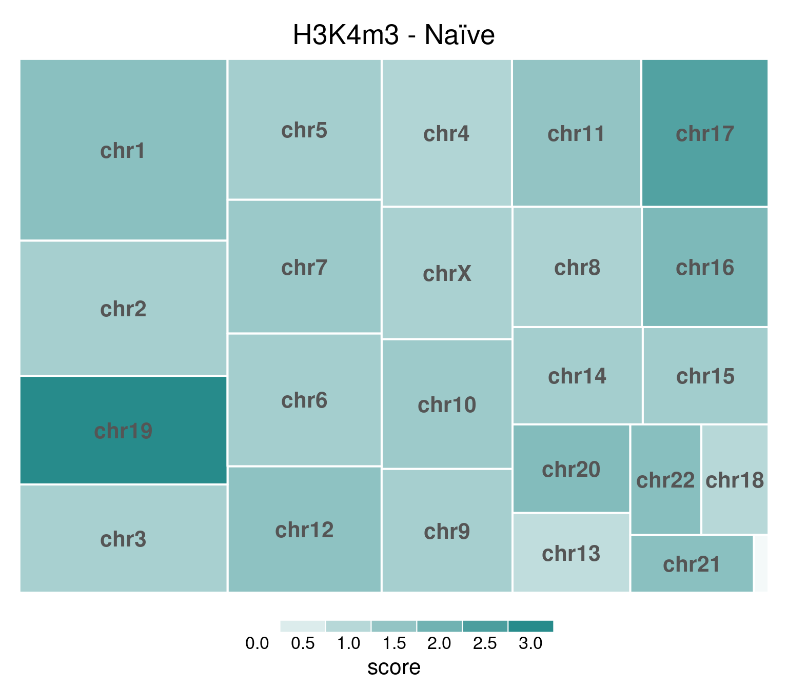
Underlying values can be downloaded here: download plot data.
bw <- file.path(params$bwdir, "H3K4m3_H9_Pr_pooled.hg38.scaled.bw")
values <- scaled_reads_per_chromosome(bw, chromosomes = chromosomes)
chr_treeplot(
values,
palette = c("#ffffff", gl_condition_colors[["Primed_Untreated"]]),
fontcolor.labels = "#555555",
border.col = c("white"),
title = "H3K4m3 - Primed"
)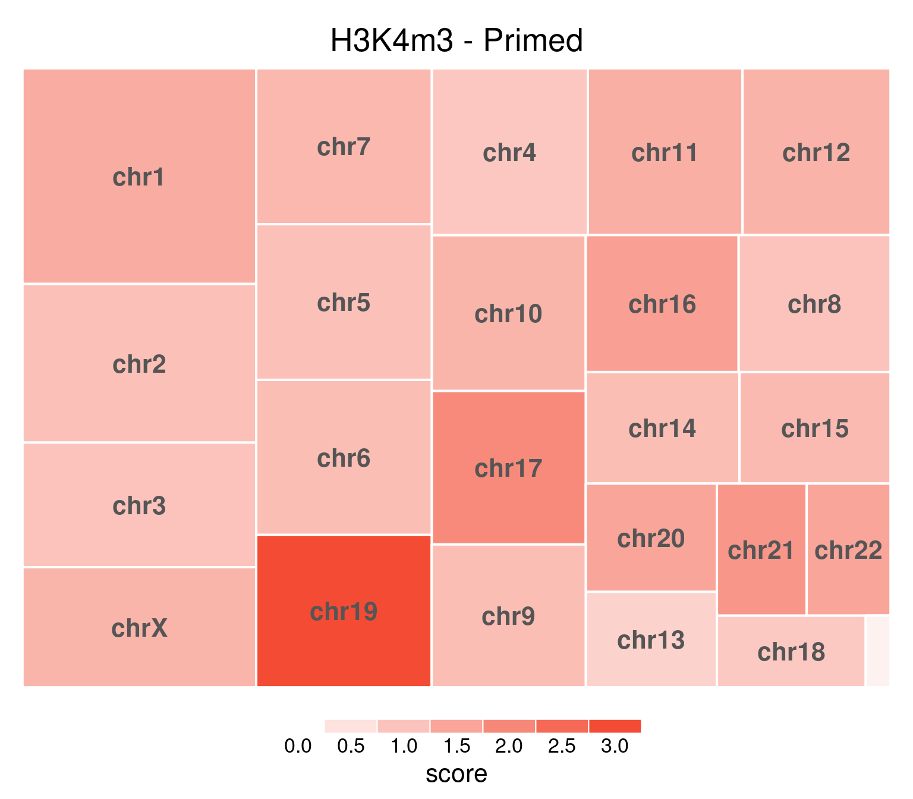
Underlying values can be downloaded here: download plot data.
EZH2i-treated cells, in comparison, have H3K27m3 globally removed:
bw <- file.path(params$bwdir, "H3K4m3_H9_Ni-EZH2i_pooled.hg38.scaled.bw")
values <- scaled_reads_per_chromosome(bw, chromosomes = chromosomes)
chr_treeplot(
values,
palette = c("#ffffff", gl_condition_colors[["Naive_Untreated"]]),
fontcolor.labels = "#555555",
border.col = c("white"),
title = "H3K4m3 - Naïve-EZH2i"
)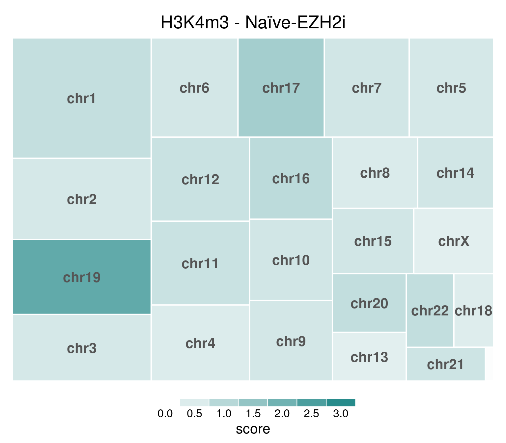
Underlying values can be downloaded here: download plot data.
bw <- file.path(params$bwdir, "H3K4m3_H9_Pr-EZH2i_pooled.hg38.scaled.bw")
values <- scaled_reads_per_chromosome(bw, chromosomes = chromosomes)
chr_treeplot(
values,
palette = c("#ffffff", gl_condition_colors[["Primed_Untreated"]]),
fontcolor.labels = "#555555",
border.col = c("white"),
title = "H3K4m3 - Primed-EZH2i"
)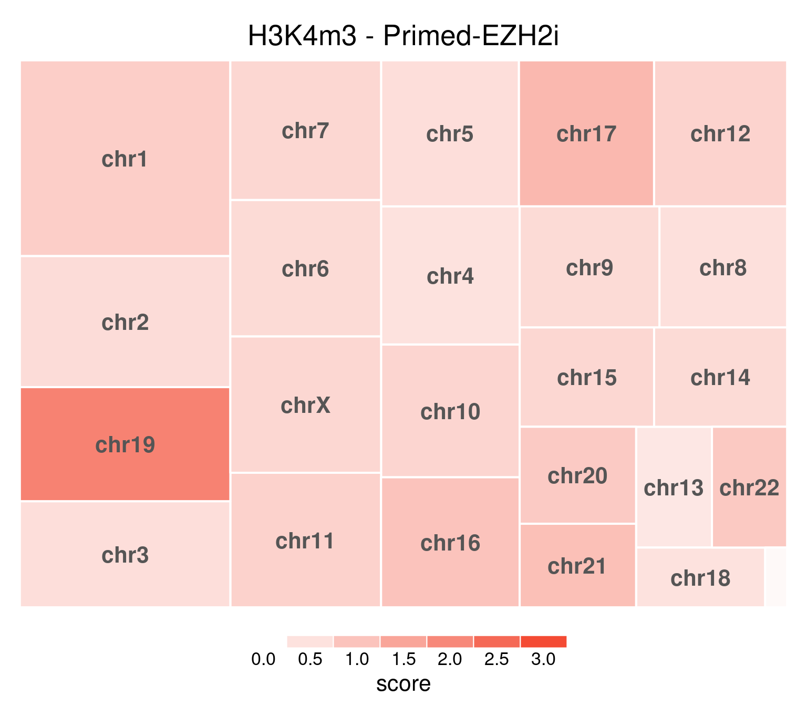
H2AUb does not show this X-chromosome specificity either.
bw <- file.path(params$bwdir, "H2Aub_H9_Ni_pooled.hg38.scaled.bw")
values <- scaled_reads_per_chromosome(bw, chromosomes = chromosomes)
chr_treeplot(
values,
palette = c("#ffffff", gl_condition_colors[["Naive_Untreated"]]),
fontcolor.labels = "#555555",
border.col = c("white"),
title = "H2Aub - Naïve"
)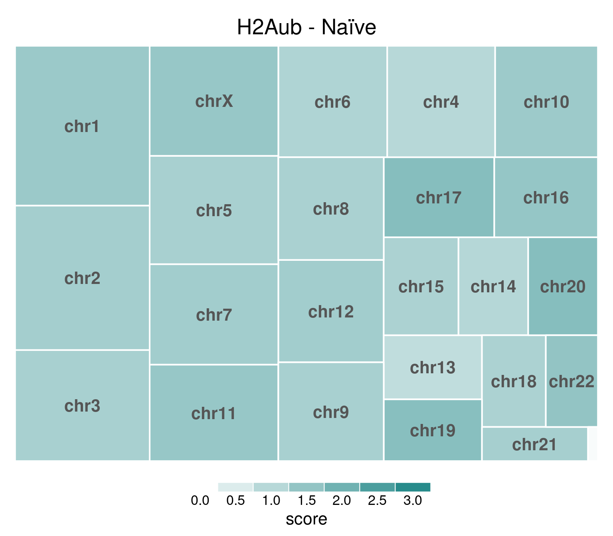
Underlying values can be downloaded here: download plot data.
bw <- file.path(params$bwdir, "H2Aub_H9_Pr_pooled.hg38.scaled.bw")
values <- scaled_reads_per_chromosome(bw, chromosomes = chromosomes)
chr_treeplot(
values,
palette = c("#ffffff", gl_condition_colors[["Primed_Untreated"]]),
fontcolor.labels = "#555555",
border.col = c("white"),
title = "H2Aub - Primed"
)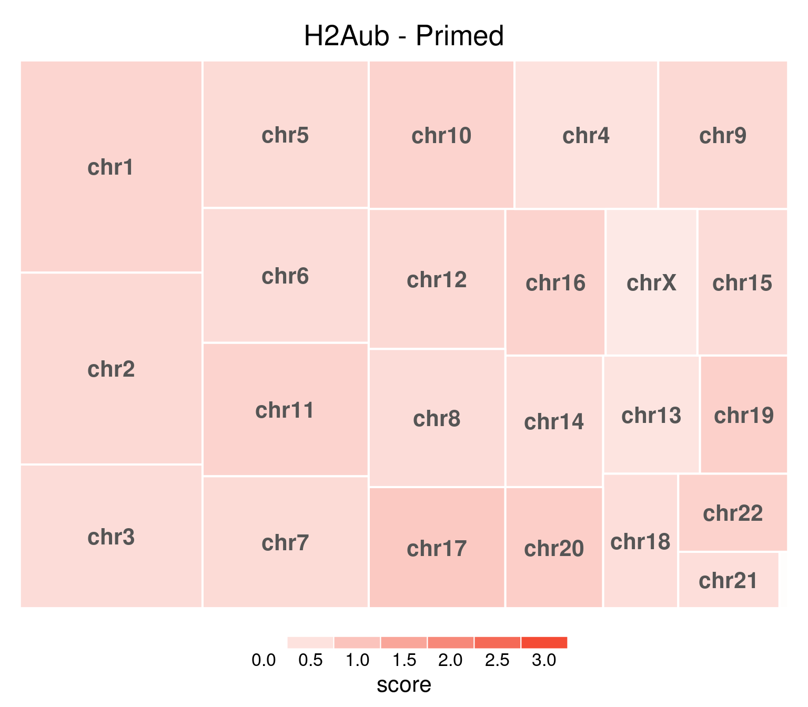
Underlying values can be downloaded here: download plot data.
EZH2i-treated cells, in comparison, have H3K27m3 globally removed:
bw <- file.path(params$bwdir, "H2Aub_H9_Ni-EZH2i_pooled.hg38.scaled.bw")
values <- scaled_reads_per_chromosome(bw, chromosomes = chromosomes)
chr_treeplot(
values,
palette = c("#ffffff", gl_condition_colors[["Naive_Untreated"]]),
fontcolor.labels = "#555555",
border.col = c("white"),
title = "H2Aub - Naïve-EZH2i"
)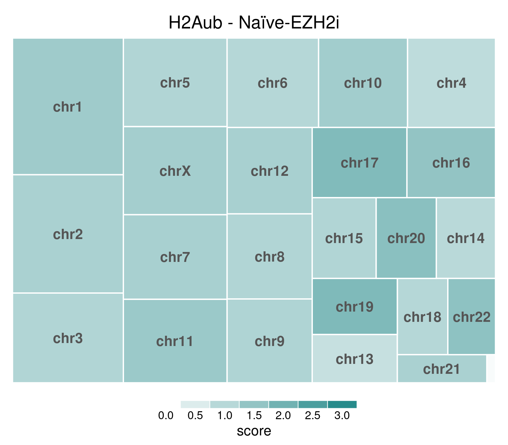
Underlying values can be downloaded here: download plot data.
bw <- file.path(params$bwdir, "H2Aub_H9_Pr-EZH2i_pooled.hg38.scaled.bw")
values <- scaled_reads_per_chromosome(bw, chromosomes = chromosomes)
chr_treeplot(
values,
palette = c("#ffffff", gl_condition_colors[["Primed_Untreated"]]),
fontcolor.labels = "#555555",
border.col = c("white"),
title = "H2Aub - Primed-EZH2i"
)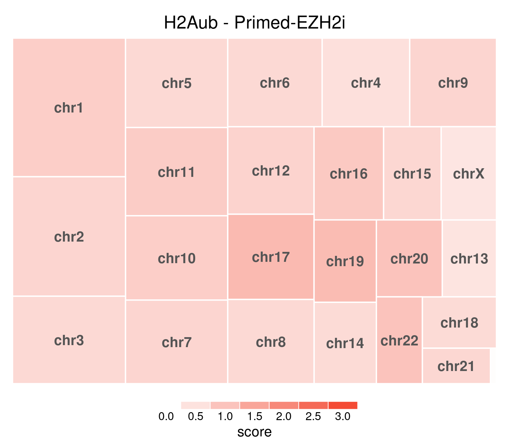
Underlying values can be downloaded here: download plot data.
sessionInfo()R version 4.0.3 (2020-10-10)
Platform: x86_64-pc-linux-gnu (64-bit)
Running under: Ubuntu 20.04.2 LTS
Matrix products: default
BLAS: /usr/lib/x86_64-linux-gnu/openblas-pthread/libblas.so.3
LAPACK: /usr/lib/x86_64-linux-gnu/openblas-pthread/liblapack.so.3
locale:
[1] LC_CTYPE=en_US.UTF-8 LC_NUMERIC=C
[3] LC_TIME=sv_SE.UTF-8 LC_COLLATE=en_US.UTF-8
[5] LC_MONETARY=sv_SE.UTF-8 LC_MESSAGES=en_US.UTF-8
[7] LC_PAPER=sv_SE.UTF-8 LC_NAME=C
[9] LC_ADDRESS=C LC_TELEPHONE=C
[11] LC_MEASUREMENT=sv_SE.UTF-8 LC_IDENTIFICATION=C
attached base packages:
[1] parallel stats4 stats graphics grDevices utils datasets
[8] methods base
other attached packages:
[1] cowplot_1.1.1 purrr_0.3.4 treemap_2.4-2
[4] rtracklayer_1.50.0 GenomicRanges_1.42.0 GenomeInfoDb_1.26.2
[7] IRanges_2.24.1 S4Vectors_0.28.1 BiocGenerics_0.36.0
[10] wigglescout_0.12.8 workflowr_1.6.2
loaded via a namespace (and not attached):
[1] MatrixGenerics_1.2.0 Biobase_2.50.0
[3] shiny_1.6.0 assertthat_0.2.1
[5] askpass_1.1 highr_0.8
[7] GenomeInfoDbData_1.2.4 Rsamtools_2.6.0
[9] yaml_2.2.1 globals_0.14.0
[11] pillar_1.4.7 lattice_0.20-41
[13] glue_1.4.2 digest_0.6.27
[15] RColorBrewer_1.1-2 promises_1.1.1
[17] XVector_0.30.0 colorspace_2.0-0
[19] htmltools_0.5.1.1 httpuv_1.5.5
[21] Matrix_1.3-2 plyr_1.8.6
[23] XML_3.99-0.5 pkgconfig_2.0.3
[25] listenv_0.8.0 zlibbioc_1.36.0
[27] xtable_1.8-4 scales_1.1.1
[29] whisker_0.4 later_1.1.0.1
[31] BiocParallel_1.24.1 openssl_1.4.3
[33] git2r_0.28.0 tibble_3.0.6
[35] generics_0.1.0 ggplot2_3.3.3
[37] ellipsis_0.3.1 SummarizedExperiment_1.20.0
[39] furrr_0.2.2 magrittr_2.0.1
[41] crayon_1.4.0 mime_0.9
[43] evaluate_0.14 fs_1.5.0
[45] future_1.21.0 parallelly_1.23.0
[47] tools_4.0.3 data.table_1.13.6
[49] lifecycle_0.2.0 matrixStats_0.58.0
[51] gridBase_0.4-7 stringr_1.4.0
[53] munsell_0.5.0 DelayedArray_0.16.0
[55] Biostrings_2.58.0 compiler_4.0.3
[57] rlang_0.4.10 grid_4.0.3
[59] RCurl_1.98-1.2 igraph_1.2.6
[61] bitops_1.0-6 rmarkdown_2.6
[63] gtable_0.3.0 codetools_0.2-18
[65] DBI_1.1.1 reshape2_1.4.4
[67] R6_2.5.0 GenomicAlignments_1.26.0
[69] knitr_1.31 dplyr_1.0.4
[71] fastmap_1.1.0 rprojroot_2.0.2
[73] stringi_1.5.3 Rcpp_1.0.6
[75] vctrs_0.3.6 tidyselect_1.1.0
[77] xfun_0.20